Sex | Frequency | Relative frequency (%) |
|---|---|---|
Male | 44 | 10.5 |
Female | 374 | 89.5 |
Learning objectives
By the end of this module you will be able to:
- Present and report categorical data numerically and graphically
- Describe the concept of probability
- Describe the characteristics of a binomial distribution
- Compute probabilities from a binomial distribution using statistical software
Optional readings
Kirkwood and Sterne (2001); Chapters 5, 14 and 15. [UNSW Library Link]
Bland (2015); Chapters 6 and 7. [UNSW Library Link]
Graphics and statistics for cardiology: designing effective tables for presentation and publication, Boers (2018, UNSW Library Link)
Guidelines for Reporting of Figures and Tables for Clinical Research in Urology, Vickers et al. (2020, UNSW Library Link)
2.1 Introduction
In Module 1, we saw how to summarise continuous data numerically and graphically. In this module, we will discuss summarising categorical data numerically and graphically. We will also introduce the concept of probability which underpins the theoretical basis of statistics, and then introduce the concept of probability distributions. We will present the binomial distribution, which calculates the probability of observing a certain number of events from multiple observations.
2.2 Summarising a single categorical variable numerically
Categorical data are best summarised using a frequency table, where each category is summarised by its frequency: the count of the number of individuals in each category. The relative frequency (the frequency expressed as a proportion or percentage of the total frequency) is usually included give further insight.
It is sometimes useful to present the cumulative relative frequency, which shows the relative frequency of individuals in a certain category or below (for example, Table 2.2).
Stage * | Frequency | Relative frequency (%) | Cumulative relative frequency (%) |
|---|---|---|---|
1 | 21 | 5.1 | 5.1 |
2 | 92 | 22.3 | 27.4 |
3 | 155 | 37.6 | 65.0 |
4 | 144 | 35.0 | 100.0 |
* Disease stage was missing for 6 participants | |||
From Table 2.2, we can see that 65.0% of participants had Stage 3 disease or lower.
2.3 Summarising a single categorical variable graphically
A categorical variable is best summarised graphically using a bar chart. For example, we can present the distribution of Stage of Disease graphically using a bar graph (Figure 2.1). Bar graphs, which are suitable for plotting discrete or categorical variables, are defined by the fact that the bars do not touch.
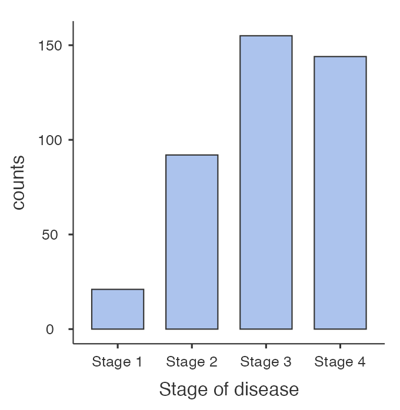
Pie charts can be an alternative way to summarise a categorical variable graphically, however their use is not recommended for the following reasons:
- Not ideal when there are many categories to compare
- The use of percentages is not appropriate when the sample size is small
- Can be misleading by using different size pies, different rotations and different colours to draw attention to specific groups
- 3D and exploding bar charts further distort the effect of perspective and may confuse the reader
Pie charts will not be discussed further in this course.
2.4 Exploratory data analysis for categorical data
As with continuous data, it is good practice to undertake exploratory data analysis before formally analysing categorical data. You should take a moment and examine a frequency table for categorical variables, to ensure all recorded values are within scope.
2.5 Summarising two categorical variables numerically
So far, we have discussed one-way frequency tables, that is, tables that summarise one variable. We can summarise more than two categorical variables in a table – called a cross tabulation, or a two-way (summarising two variables) table.
Using our PBC data, we can summarise the two categorical variables: sex and stage of disease. The two-way table of frequencies is shown in Table 2.3.
| Stage |
| |||
|---|---|---|---|---|---|
1 | 2 | 3 | 4 | Total | |
Sex | |||||
Male | 3 | 8 | 16 | 17 | 44 |
Female | 18 | 84 | 139 | 127 | 368 |
Total | 21 | 92 | 155 | 144 | 412 |
* Disease stage was missing for 6 participants | |||||
We can add percentages to two-way tables as either column or row percents. Using Table 2.3 as an example, column percents represent the relative frequencies of sex within each stage (Table 2.4).
| Stage |
| |||
|---|---|---|---|---|---|
1 | 2 | 3 | 4 | Total | |
Sex | |||||
Male | 3 (14%) | 8 (9%) | 16 (10%) | 17 (12%) | 44 (11%) |
Female | 18 (86%) | 84 (91%) | 139 (90%) | 127 (88%) | 368 (89%) |
Total | 21 (100%) | 92 (100%) | 155 (100%) | 144 (100%) | 412 (100%) |
* Disease stage was missing for 6 participants | |||||
Conversely, row percents represent the relative frequencies of stage within each sex (Table 2.5).
| Stage |
| |||
|---|---|---|---|---|---|
1 | 2 | 3 | 4 | Total | |
Sex | |||||
Male | 3 (7%) | 8 (18%) | 16 (36%) | 17 (39%) | 44 (100%) |
Female | 18 (5%) | 84 (23%) | 139 (38%) | 127 (35%) | 368 (100%) |
Total | 21 (5%) | 92 (22%) | 155 (38%) | 144 (35%) | 412 (100%) |
* Disease stage was missing for 6 participants | |||||
Tables containing more than two variables
It is possible to construct multi-way tables that summarise more than two categorical variables in a single table. However, tables can become complex when more than two variables are incorporated, and you may need to present the information as two tables or incorporate additional rows and columns.
In Figure 2.2, characteristics of the sample of prisoners from the NPHDC were presented. This table contains information about sex, age group and Indigenous status from different groups of prisoners; prison entrants, discharges, and prisoners in custody. This type of condensed information is often found in reports and journal articles giving demographic information, by different groups considered in the study.
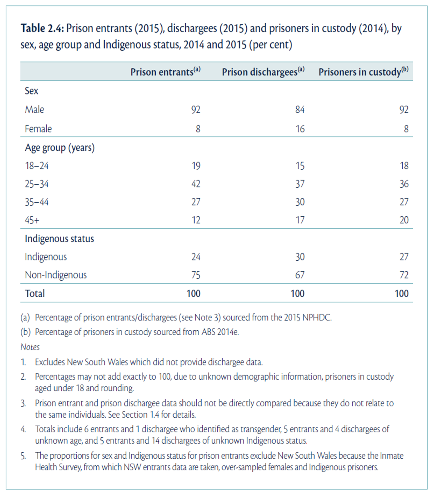
We might also consider a table containing further pieces of information. The table presented in Figure 2.3 (from the health of Australia’s prisoners 2015 report) compares prison entrants and the general community by three variables: age group, Indigenous status, and highest level of completed education.
Can you see any issues with the presentation of this table?
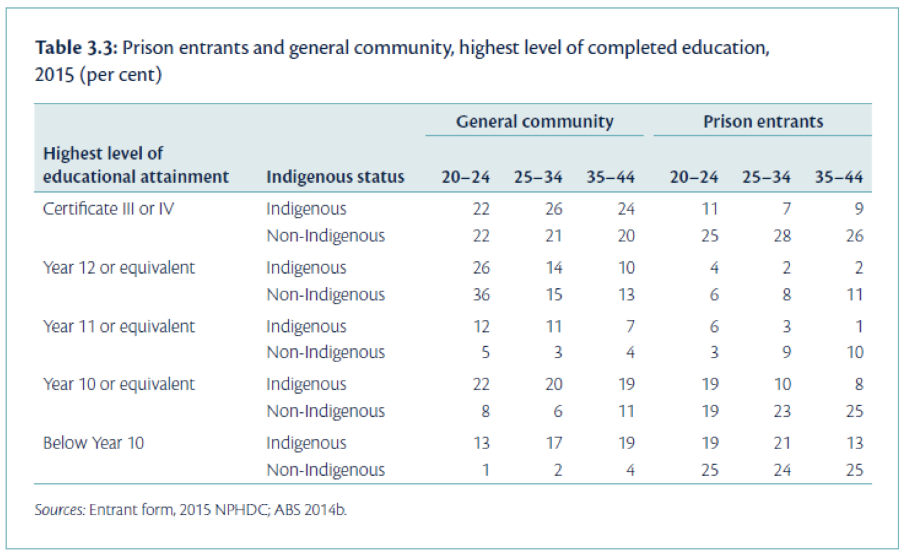
Source: Australian Institute of Health and Welfare 2015. The health of Australia’s prisoners 2015. Cat. no. PHE 207. Canberra: AIHW.
Some issues in this table:
- The title of the table does not contain full information about the variables in the table;
- It is unclear how the percentages were calculated (which groupings added to 100%);
- The ages are not labelled as such, thus without reading the text in report it is unclear that these are age groupings.
2.6 Summarising two categorical variables graphically
Information from more than one variable can be presented as clustered or multiple bar chart (bars side-by-side) (Figure 2.4). This type of graph is useful when examining changes in the categories separately, but also comparing the grouping variable between the main bar variable. Here we can see that Stage 3 and Stage 4 disease is the most common for both males and females, but there are many more females within each stage of disease.
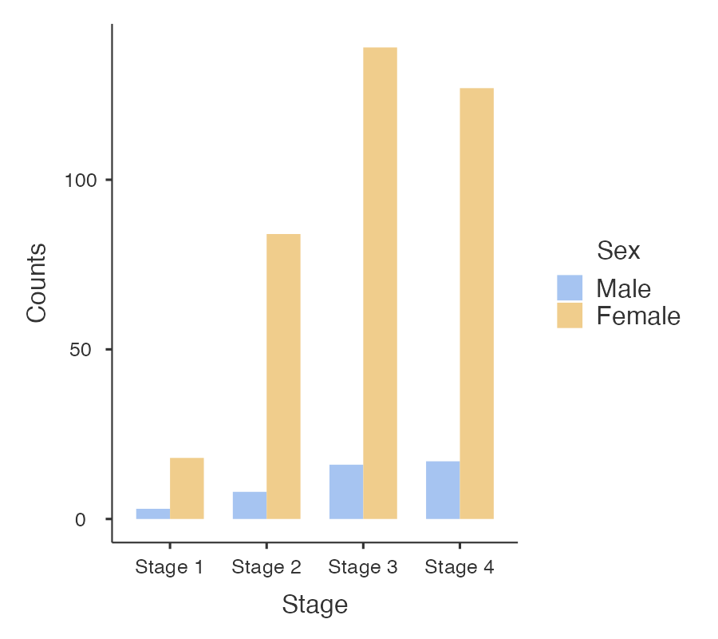
An alternative bar graph is a stacked or composite bar graph, which retains the overall height for each category, but differentiates the bars by another variable (Figure 2.5).
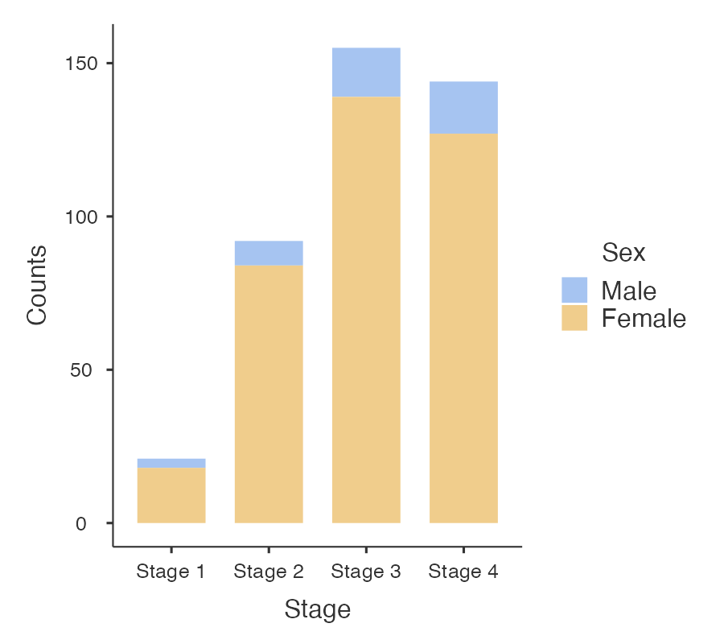
Finally, a stacked relative bar chart (Figure 2.6) displays the proportion of grouping variable for each bar, where each overall bar represents 100%. These graphs allow the reader to compare the proportions between categories. We can easily see from Figure 2.6 that the distribution of sex is similar across each stage of disease.
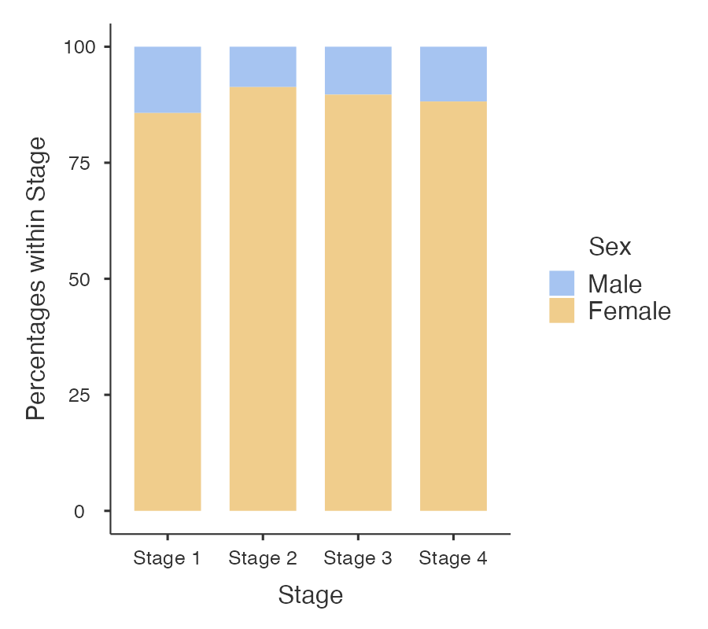
2.7 Presentation guidelines
Guidelines for presenting summary statistics
When reporting summary statistics, it is important not to present results with too many decimal places. Doing so implies that your data have a higher level of precision than they do. For example, presenting a mean blood pressure of 100.2487 mmHg implies that blood pressure can be measured accurately to at least three decimal places.
There are a number of guidelines that have been written to help in the presentation of numerical data. Many of these guidelines are based on the number of decimal places, while others are based on the number of significant figures. Briefly, the number of significant figures are “the number of digits from the first non-zero digit to the last meaningful digit, irrespective of the position of the decimal point. Thus, 1.002, 10.02, 100200 (if this number is expressed to the nearest 100) all have four significant digits.” Armitage, Berry, and Matthews (2013)
A summary of these guidelines that will be used in this course appear in Table 2.6.
Summary statistic | Guideline (reference) |
|---|---|
Mean | It is usually appropriate to quote the mean to one extra decimal place compared with the raw data. (Altman) |
Median, Interquartile range, Range | As medians, interquartile ranges and ranges are based on individual data points, these values should be presented with the same precision as the original data. |
Percentage | Percentages do not need to be given with more than one decimal place at most. When the sample size is less than 100, no decimal places should be given. (Altman) |
Probability | It is acceptable to present probabilities to 2 or 3 decimal places. If the probability is presented as a percentage, present the percentage with 0 or 1 decimal place. |
Standard deviation | The standard deviation should usually be given to the same accuracy as the mean, or with one extra decimal place. (Altman) |
Standard error | As per standard deviation |
Confidence interval | Use the same rule as for the corresponding effect size (be it mean, percentage, mean difference, regression coefficient, correlation coefficient or risk ratio) (Cole) |
Test statistic | Test statistics should not be presented with more than two decimal places. |
P-value | Report P-values to a single significant figure unless the P-value is close to 0.05 (say, 0.01 to 0.2), in which case, report two significant figures. Do not report `not significant` for P-values of 0.05 or higher. Very low P-values can be reported as P < 0.001 or P < 0.0001. A P-value can indeed be 1, although some investigators prefer to report this as >0.9. (Based on Assel) |
Difference in means | As for the estimated means |
Difference in proportions | As for the estimated proportions |
Odds ratio / Relative risk | Hazard and odds ratios are normally reported to two decimal places, although this can be avoided for high odds ratios (Assel) |
Correlation coefficient | One or two decimal places, or more when very close to ±1 (Cole) |
Regression coefficient | Use one more significant figure than the underlying data (adapted from Cole) |
Table presentation guidelines
Consider the following guidelines for the appropriate presentation of tables in scientific journals and reports (Woodward, 2013).
- Each table (and figure) should be self-explanatory, i.e. the reader should be able to understand it without reference to the text in the body of the report.
- This can be achieved by using complete, meaningful labels for the rows and columns and giving a complete, meaningful title.
- Footnotes can be used to enhance the explanation.
- Units of the variables (and if needed, method of calculation or derivation) should be given and missing records should be noted (e.g. in a footnote).
- A table should be visually uncluttered.
- Avoid use of vertical lines.
- Horizontal lines should not be used in every single row, but they can be used to group parts of the table.
- Sensible use of white space also helps enormously; use equal spacing except where large spaces are left to separate distinct parts of the table.
- Different typefaces (or fonts) may be used to provide discrimination, e.g. use of bold type and/or italics.
- The rows and columns of each table should be arranged in a natural order to help interpretation. For instance, when rows are ordered by the size of the numbers they contain for a nominal variable, it is immediately obvious where relatively big and small contributions come from.
- Tables should have a consistent appearance throughout the report so that the paper is easy to follow (and also for an aesthetic appearance). Conventions for labelling and ordering should be the same (for both tables as well as figures) for ease of comparison of different tables (and figures).
- Consider if there is a particular table orientation that makes a table easier to read.
Given the different possible formats of tables and their complexity, some further guidelines are given in the following excellent references:
Graphical presentation guidelines
Consider the following guidelines for the appropriate presentation of graphs in scientific journals and reports (Woodward, 2013).
- Figures should be self-explanatory and have consistent appearance through the report.
- A title should give complete information. Note that figure titles are usually placed below the figure, whereas for tables titles are given above the table.
- Axes should be labelled appropriately
- Units of the variables should be given in the labelling of the axes. Use footnotes to indicate any calculation or derivation of variables and to indicate missing values
- If the Y-axis has a natural origin, it should be included, or emphasised if it is not included.
- If graphs are being compared, the Y-axis should be the same across the graphs to enable fair comparison
- Columns of bar charts should be separated by a space
- Three dimensional graphs should be avoided unless the third dimension adds additional information
Sources:
Altman (1990)
Cole (2015)
Assel et al. (2019)
2.8 Probability
Probability is defined as:
the chance of an event occurring, where an event is the result of an observation or experiment, or the description of some potential outcome.
Probabilities range from 0 (where the event will never occur) to 1 (where the event will always occur). For example, tossing a coin is an experiment; one event is the coin landing with head up, while the other event is the coin landing tails up. The set of all possible outcomes in an experiment is called the sample space. For example, by tossing a coin you can get either a head or a tail (called mutually exclusive events); and by rolling a die you can get any of the six sides. Thus, for a die the sampling space is: S = {1, 2, 3, 4, 5, 6}
With a fair (unbiased) die, the probability of each outcome occurring is 1/6 and its probability distribution is simply a probability of 1/6 for each of the six numbers on a die.
Additive law of probability
How do we work out the probability that one roll of a die will turn out to be a 3 or a 6? To do that, we first need to work out whether the events (3 or 6 on the roll of a die) are mutually exclusive. Events are mutually exclusive if they are events which cannot occur at the same time. For example, rolling a die once and getting a 3 and 6 are mutually exclusive events (you can roll one or the other but not both in a single roll).
To obtain the probability of one or the other of two mutually exclusive events occurring, the sum of the probabilities of each is taken. For example, the probability of the roll of a die being a 3 or a 6 is the sum of the probability of the die being 3 (i.e. 1/6) and the probability of the die being 6 (also 1/6). With a fair die:
Probability of a die roll being 3 or 6 = \(1/6 + 1/6 = 1/3\)
Another way of putting it is:
P(die roll =3 or die roll =6) = P(die roll=3) + P(die roll=6) = \(1/6 + 1/6 = 1/3\)
Example: Additive law for mutually exclusive events
Consider that blood type can be organised into the ABO system (blood types A, B, AB or O) An individual may only have one blood type.
Using the information from https://www.donateblood.com.au/learn/about-blood let’s consider the ABO blood type system. The frequency distribution (prevalence) of the ABO blood type system in the population represents the probability of each of the outcomes. If we consider all possible blood type outcomes, then the total of the probabilities will sum to 1 (100%).
Blood Type | % of population | Probability |
|---|---|---|
A | 38% | 0.38 |
B | 10% | 0.10 |
AB | 3% | 0.03 |
O | 49% | 0.49 |
Total | 100% | 1.00 |
In this example we consider: What is the probability that an individual will have either blood group O or A?
Since blood type is mutually exclusive, the probability that either one or the other occurs is the sum of the individual probabilities. These are mutually exclusive events so we can say P(O or A) = P(O) + P(A)
Thus, the answer is: P(Blood type O) + P(Blood type A) = 0.49 + 0.38 = 0.87
Multiplicative law of probability
The additive law of probability lets us consider the probability of different outcomes in a single experiment. The multiplicative law lets us consider the probability of multiple events occurring in a particular order. For example: if I roll a die twice, what is the probability of rolling a 3 and then a 6?
These events are independent: the probability of rolling a 6 on the second roll is not affected by the first roll.
The multiplicative law of probability states:
If A and B are independent, then P(A and B) = P(A) \(\times\) P(B).
So, the probability of rolling a 3 and then a 6 is: P(3 and 6) = \(1/6 \times 1/6 = 1/36\).
Note here that the order matters – we are considering the probability of rolling a 3 and then a 6, not the probability of rolling a 6 and then a 3.
2.9 Probability distributions
A probability distribution is a table or a function that provides the probabilities of all possible outcomes for a random event.
For example, the probability distribution for a single coin toss is straightforward: the probability of obtaining a head is 0.5, and the probability of obtaining a tail is 0.5, and this can be summarised in Table 2.8.
Coin face | Probability |
|---|---|
Heads | 0.5 |
Tails | 0.5 |
Similarly, the probability distribution for a single roll of a die is straightforward: each face has a probability of 1/6 (Table 2.9).
Face of a die | Probability |
|---|---|
1 | 1/6 |
2 | 1/6 |
3 | 1/6 |
4 | 1/6 |
5 | 1/6 |
6 | 1/6 |
Things become more complicated when we consider multiple coin-tosses, or rolls of a die. These series of events can be summarised by considering the number of times a certain outcome is observed. For example, the probability of obtaining three heads from five coin tosses.
Probability distributions can be used in two main ways:
- To calculate the probability of an event occurring. This seems trivial for the coin-toss and die-roll examples above. However, we can consider more complex events, as below.
- To understand the behaviour of a sample statistic. We will see in Modules 3 and 4 that we can assume the mean of a sample follows a probability distribution. We can obtain useful information about the sample mean by using properties of the probability distribution.
2.10 Discrete random variables and their probability distributions
Rather than thinking of random events, we often use the term random variable to describe a quantity that can have different values determined by chance.
A discrete random variable is a random variable that can take on only countable values (that is, non-negative whole numbers). An example of a discrete random variable is the number of heads observed in a series of coin tosses.
A discrete random variable can be summarised by listing all the possible values that the variable can take. As defined earlier, a table, formula or graph that presents these possible values, and their associated probabilities, is called a probability distribution.
Example: let’s consider the number of heads in a series of three coin tosses. We might observe 0 heads, or 1 head, or 2, or 3 heads. If we let X denote the number of heads in a series of three coin tosses, then possible values of X are 0, 1, 2 or 3.
We write the probability of observing x heads as P(X=x). So P(X=0) is the probability that the three tosses has no heads. Similarly, P(X=1) is the probability of observing one head.
The possible combinations for three coin tosses are as follows:
Pattern | Number of heads |
|---|---|
Tail, Tail, Tail | 0 |
Head, Tail, Tail | 1 |
Tail, Head, Tail | |
Tail, Tail, Head | |
Head, Head, Tail | 2 |
Head, Tail, Head | |
Tail, Head, Head | |
Head, Head, Head | 3 |
There are eight possible outcomes from three coin tosses (permutations). If we assume an equal chance of observing a head or a tail, each permutation above is equally likely, and so has a probability of 1/8.
If we consider the possibility of observing just one head out of the three tosses, this can happen in three ways (HTT, THT, TTH). So the probability of observing one head is calculated using the additive law: P(X=1) = \(\tfrac{1}{8} + \tfrac{1}{8} + \tfrac{1}{8} = \tfrac{3}{8}\).
Therefore, the probability distribution for X, the number of heads from three coin tosses, is as follows:
x (number of heads observed) | P(X=x) |
|---|---|
0 | 1/8 |
1 | 1/8 + 1/8 + 1/8 = 3/8 |
2 | 1/8 + 1/8 + 1/8 = 3/8 |
3 | 1/8 |
Note that the probabilities sum to 1.
The above example was based on a coin toss, where flipping a head or a tail is equally likely (both have probabilities of 0.5). Let’s consider a case where the probability of an event is not equal to 0.5: having blood type A.
From Table 2.7, the probability that a person has Type A blood is 0.38, and therefore, the probability that a person does not have Type A blood is 0.62 (1–0.38). If we considered taking a random sample of three people, the probability that all three would have Type A blood is 0.38 × 0.38 × 0.38 (using the multiplicative rule above) – and there is only one way this could happen.
The number of ways two people out of three could have Type A blood is 3, and each permutation is listed in Table 2.12. The probability of observing each of the three patterns is the same, and can be calculated using the multiplicative rule: 0.38 × 0.38 × 0.62 = 0.0895.
Person 1 | Person 2 | Person 3 | Probability |
|---|---|---|---|
A | A | A | 0.38 × 0.38 × 0.38 = 0.0549 |
A | A | Not A | 0.38 × 0.38 × 0.62 = 0.0895 |
A | Not A | A | 0.38 × 0.62 × 0.38 = 0.0895 |
Not A | A | A | 0.62 × 0.38 × 0.38 = 0.0895 |
A | Not A | Not A | 0.38 × 0.62 × 0.62 = 0.1461 |
Not A | A | Not A | 0.62 × 0.38 × 0.62 = 0.1461 |
Not A | Not A | A | 0.62 × 0.62 × 0.38 = 0.1461 |
Not A | Not A | Not A | 0.62 × 0.62 × 0.62 = 0.2383 |
Table 2.13 gives the probability of each of the blood type combinations we could observe in three people. The probability of observing a certain number of people (say, k) with Type A blood from a sample of three people can be calculated by summing the combinations:
Number of people with Type A blood | Probability of each pattern |
|---|---|
3 | 0.0549 |
2 | 0.0895 + 0.0895 + 0.0895 = 0.2689 |
1 | 0.1461 + 0.1461 + 0.1461 = 0.4382 |
0 | 0.2383 |
2.11 Binomial distribution
The above are examples of the binomial distribution. The binomial distribution is used when we have a collection of random events, where each random event is binary (e.g. Heads vs Tails, Type A blood vs Not Type A blood, Infected vs Not infected). The binomial distribution calculates (in general terms):
- the probability of observing k successes
- from a collection of n trials
- where the probability of a success in one trial is p.
The terms used here can be defined as:
- a success is simply an event of interest from a binary random event. In the coin-toss example, “success” was tossing a Head. In the blood type example, we were only interested in whether someone was Type A or not Type A, so “success” was a blood of Type A. We tend to use the word “success” to mean “an event of interest”, and “failure” as “an event not of interest”.
- the number of trials refers to the number of random events observed. In both examples, we observed three events (three coin tosses, three people).
- the probability of a success (p) simply refers to the probability of the event of interest. In the coin toss example, this was the probability of tossing a Heads (=0.5); for the blood-type example, this was the probability of having Type A blood (0.38).
Putting all this together, we say that we have a binomial experiment. To satisfy the assumptions of a binomial distribution, our experiment must satisfy the following criteria:
- The experiment consists of fixed number (n) of trials.
- The result of each trial falls into only one of two categories – the event occurred (“success”) or the event did not occur (“failure”).
- The probability, p, of the event occurring remains constant for each trial.
- Each trial of the experiment is independent of the other trials.
We have shown in the examples above how we can calculate the probabilities for small experiments (n=3). Once n becomes large, constructing such probability distribution tables becomes difficult. The general formula for calculating the probability of observing k successes from n trials, where each trial has a probability of success of p is given by:
\[ P(X=k) = \frac{n!}{k! (n-k)!} \times p^k \times (1-p)^{n-k} \]
where \(n! = n \times (n-1) \times (n-2) \times \dots \times 2 \times 1\).
Note that this formula is almost never calculated by hand. Instructions for calculating binomial probabilities are given in the jamovi and R notes at the end of this Module.
Worked example
A population-based survey conducted by the AIHW (2008) of a random sample of the Australian population estimated that in 2007, 19.8% of the Australian population were current smokers.
- From a random sample of 6 people from the Australian population in 2007, what is the probability that 3 of them will be smokers?
- What is the probability that among the six persons, at least 4 will be smokers?
- What is the probability that at most, 2 will be smokers?
Solution
- Calculating this single binomial probability is best done using software.
We can use the applet to calculate this, or use the dbinom function in R with x=3, size=6, and prob=0.198. This gives an answer of 0.08.
- In common language, getting “at least 4” smokers means getting 4, 5 or 6 smokers. Since these are mutually exclusive events, we can apply the additive law to find the probability of getting at least 4 smokers:
\[ P(X \ge 4) = P(X=4) + P(X=5) + P(X=6) \] Using the same binomial probability functions as in the previous question, we could calculate
- P(X=4) = 0.0148
- P(X=5) = 0.00146
- P(X=6) = 0.0000603
Answer: \(P(X \ge 4) = 0.0148 + 0.00146 + 0.0000603 = 0.016\)
We can use the applet to calculate this, or in R we can use the pbinom function with the lower.tail=FALSE option.
- Observing at most two means observing 0, 1 or 2 smokers. Therefore, the probability of observing at most 2 smokers is:
- P(X \(\le\) 2) = P(X=0) + P(X=1) + P(X=2)
- P(X=0) = 0.266
- P(X=1) = 0.394
- P(X=2) = 0.243
Answer: P(X \(\le\) 2) = 0.266+0.394+0.243=0.903
Again, we can use the applet to calculate this, or use the pbinom function in R.
jamovi notes
2.12 Producing a one-way frequency table
The simplest way to summarise categorical variables is with a one-way frequency table. These are constructed using Analyses > Exploration. We will illustrate this by summarising the variable sex from the pbc.rds data from the previous module.
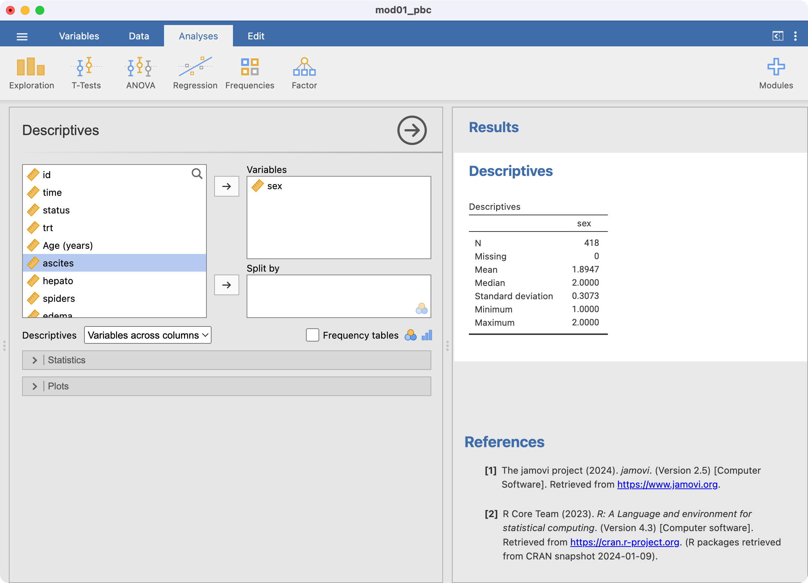
jamovi has summarised sex here, just as we asked it to, however it has analysed sex as if it was a continuous variable. This is incorrect: sex is a categorical variable. This can be corrected by defining sex to be categorical within Data > Setup:
- Select
sex, then choose Nominal as the Measure type. jamovi now lists the levels ofsexas 1 and 2. These should be replaced by the categories they represent. - From the
mod01_pbc_info.txtfile, we see that 1 represents Male, and 2 represents Female. These labels can be added by typing in the appropriate cell. The completed screen should look like this:
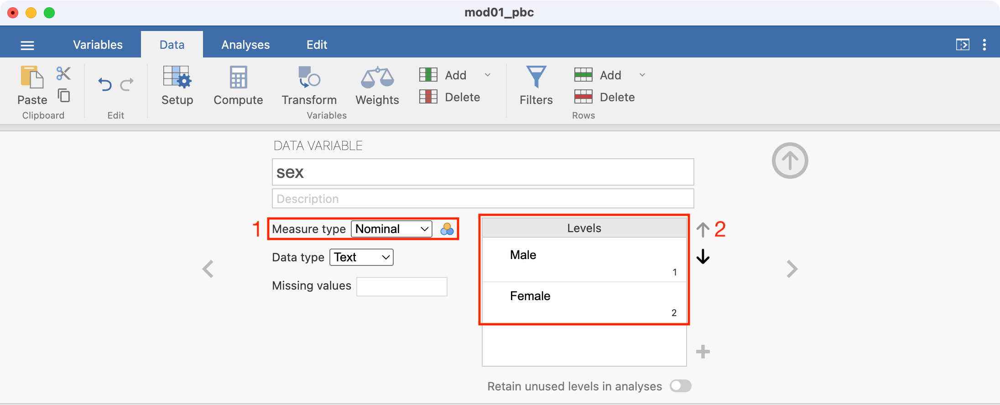
Clicking back to the original summary of sex shows that jamovi is no longer treating sex as a continuous variable, but there is little output in the summary:
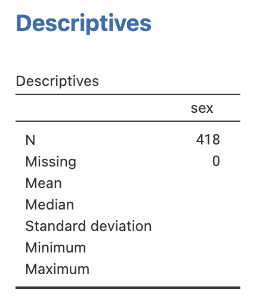
Click Frequency tables in the main Descriptives window to request the one-way frequency table:
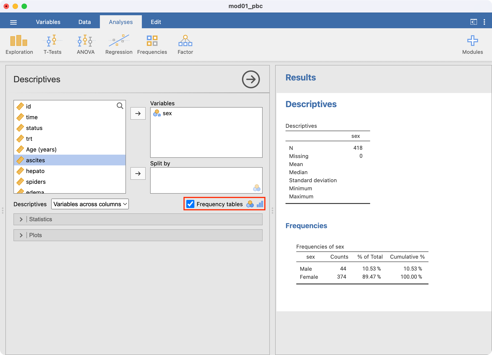
2.13 Producing a two-way frequency table
Two-way tables are constructed using Analyses > Frequencies > Contingency Tables > Independent Samples. Note that both variables must be defined as Nominal variables. As an example, to produce a two-way table of disease stage by sex:
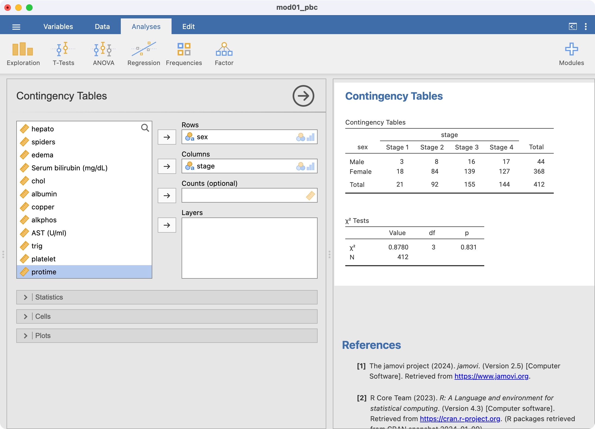
Ignore the output labelled χ2 tests for now.
Row or column percents can be requested in the Cells section. For example, to calculate the proportion of males within each stage of disease, we would request column percents:
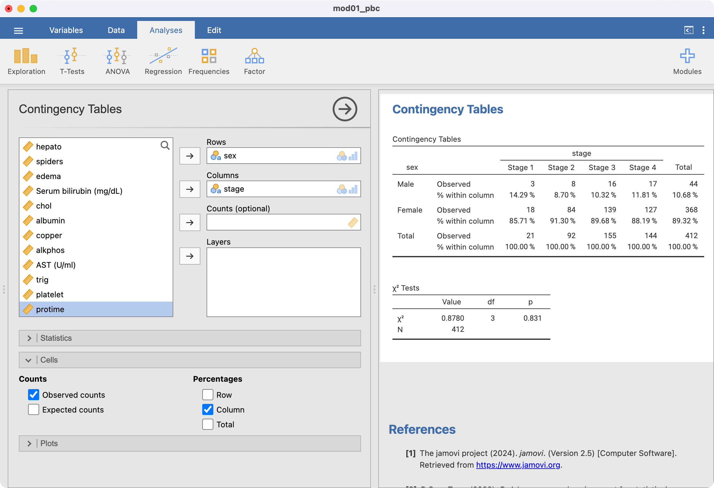
2.14 Creating bar charts for one categorical variable
Here we will create the bar chart shown in Figure 2.1 using the mod01_pbc.rds dataset. The x-axis of this graph will be the stage of disease, and the y-axis will show the number of participants in each category.
Bar charts are created in the Exploration tab. We can summarise stage, and request a Frequency table in the usual way. To request a bar chart as well, tick Bar plot within the Plots section:
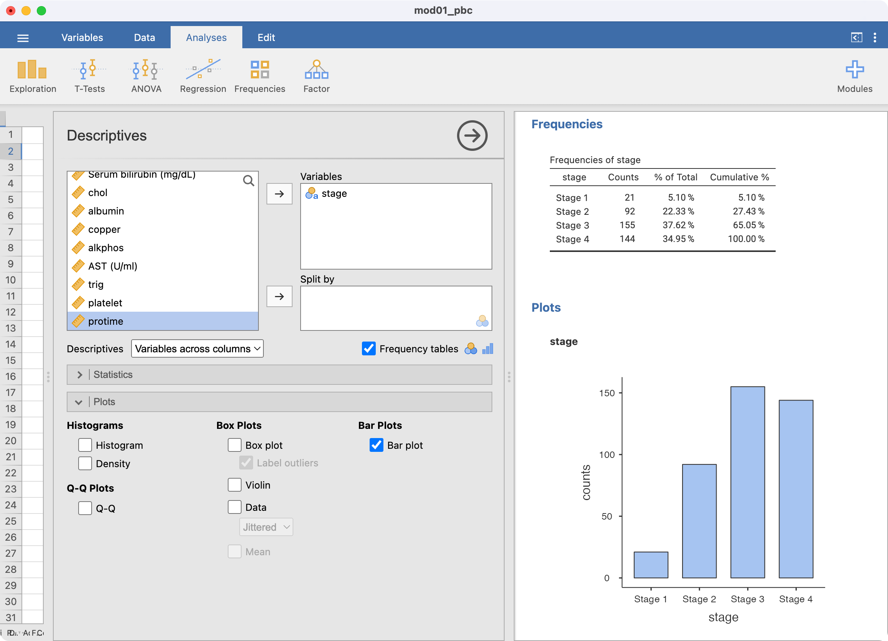
2.15 Creating bar charts for two categorical variables
Creating a clustered bar chart as shown in Figure 2.4 can be done using Analyses > Frequencies > Contingency Tables > Independent Samples. First create the cross-tab of interest, for example, Stage by Sex. Choose Plots > Bar Plot, and ensure the Bar Type is selected as Side by side. Choose the X-axis as required - here we want to see stage on the x-axis, so we choose the x-axis to be columns (this may need to be adjusted according to how your table has been set up):
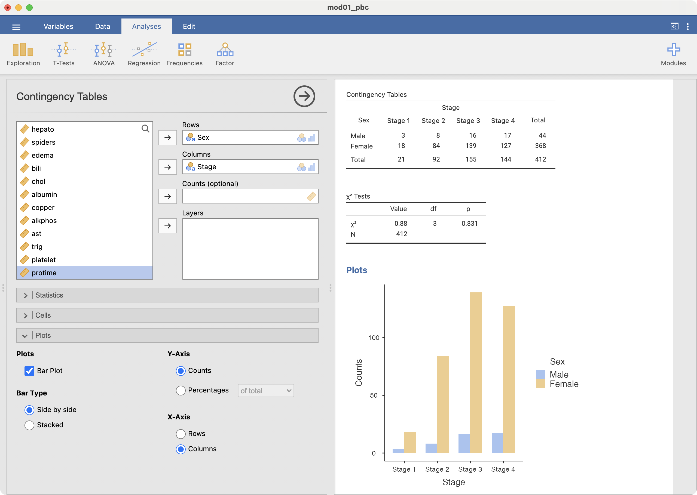 To create a stacked bar chart (as in Figure 2.5), choose the Bar Type to be Stacked:
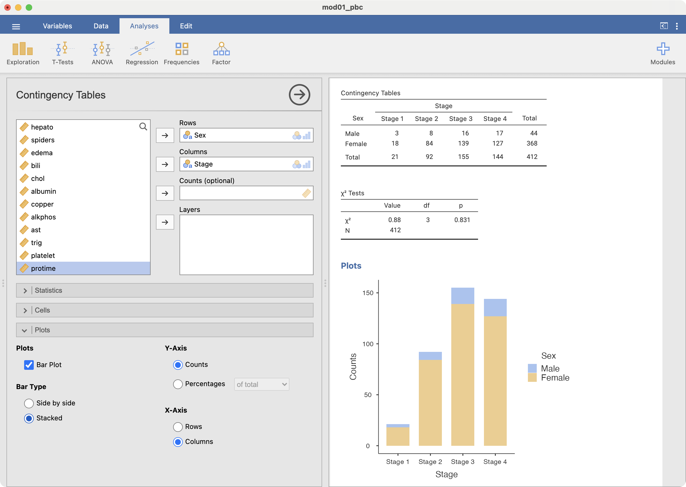
Finally, to create a stacked relative bar chart (as in Figure 2.6), choose the Y-axis to be Percentages within column:
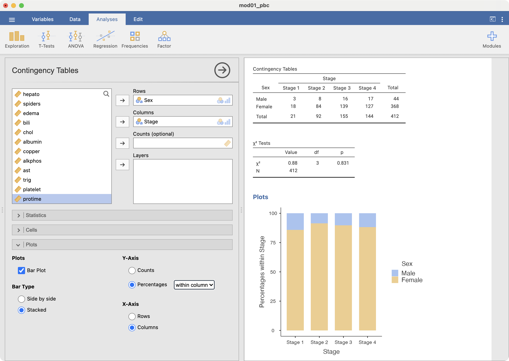
2.16 Recoding data
One task that is common in statistical computing is to recode variables. For example, we might want to group some categories of a categorical variable, or to present a continuous variable in a categorical way.
In this example, we can use the pbc data and recode age into age groups:
- Less than 30
- 30 to less than 50
- 50 to less than 70
- 70 or older
Recoding can be done using Data > Transform.
First, click Data to view the spreadsheet, then click in an empty column, then click Setup > NEW TRANSFORMED VARIABLE. We need to specify three things:
- The name of the new variable. Here, we will choose
age group. - The source variable. Here, we want to recode from
age, so chooseage. - The
transform, which is where we define the rules of the recode. Choose Create New Transform.
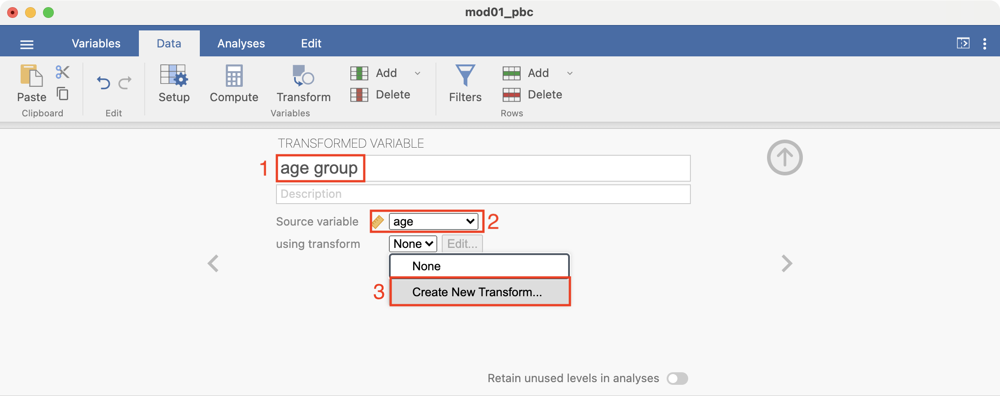
The transform is built up by specifying the recode conditions. Click + Add recode condition to define the first condition:
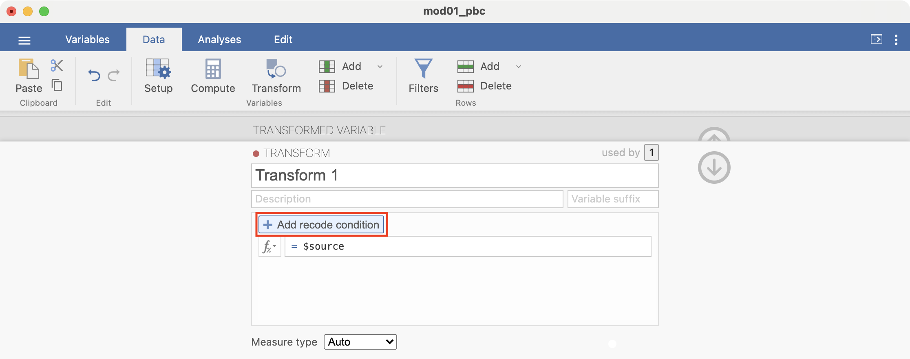
Here we want to define all ages less than 30 as “Less than 30”. Complete the recode condition so it appears as: if $source < 30 use "Less than 30". Note that the quotation marks around “Less than 30” are required:
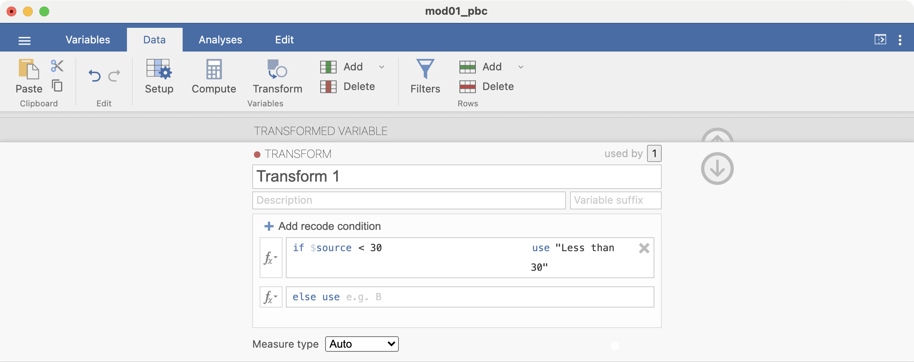
Add another recode condition, which will be applied if the first condition is not satisfied: if $source < 50 use "30 to less than 50":
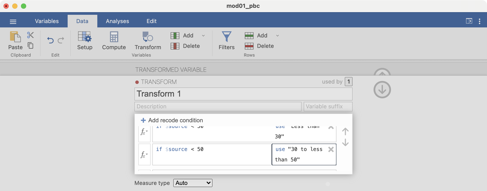
Add another condition: if $source < 70 use "50 to less than 70". There is no need to add a condition for the final condition, simply complete the final line: else use "70 or more":
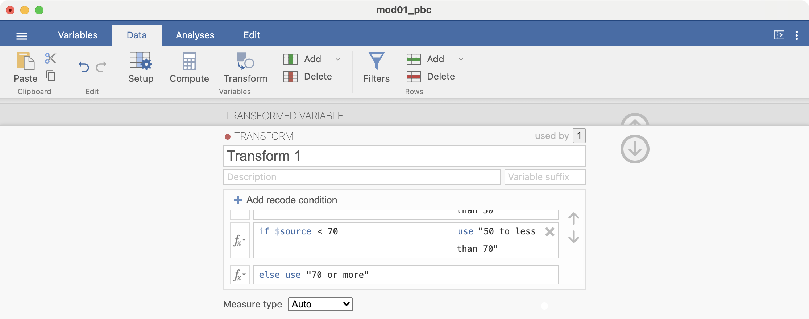
Finally, click the down arrow to dismiss the transform builder, and the up arrow to dismiss the transform dialog.
We can examine the new categories by obtaining a frequency table: Analyses > Exploration > Descriptives:
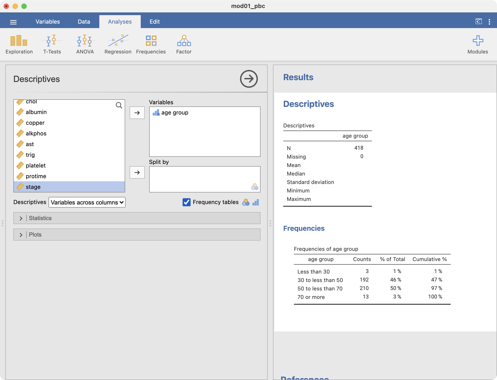
2.17 Computing binomial probabilities
jamovi does not have a point-and-click method for computing probabilities from a binomial distribution. Here, instructions are provided for using a third-party applet. This Binomial Distribution Applet has been posted at https://homepage.stat.uiowa.edu/~mbognar/applets/bin.html, and provides a simple and intuitive way to compute probabilities from a binomial distribution.
The applet requires three pieces of information:
- \(/n\): the number of binary trials being considered
- \(/p\): the probability of “success” in each trial
- \(x\): the number of success we are interested in
We also need to consider whether we are interested in the probability being equal to, greater than, or less than x.
To do the computation for part (a) in Worked Example 2.1:
- x is the number of successes, here, the number of smokers (i.e. x=3);
- n is the number of trials (i.e. n=6);
- and p is probability of drawing a smoker from the population, which is 19.8% (i.e. p=0.198).
Replace each of these with the appropriate number into the applet:
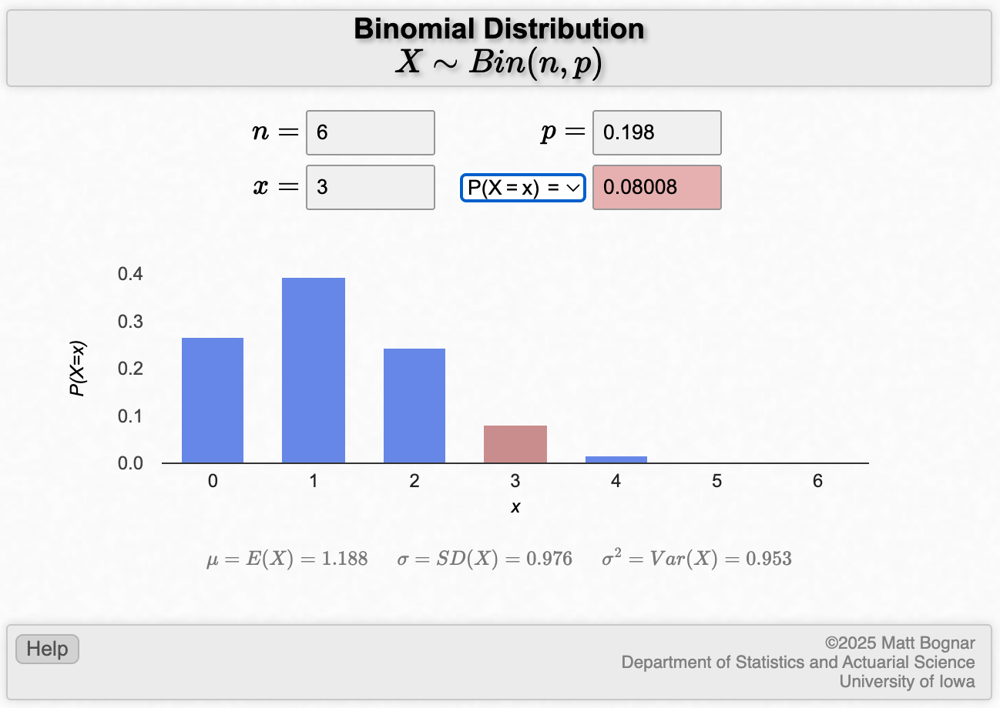
To calculate the probability of at least 4 smokers in part (b), we change the drop-down to “P(X≥x)”, and x to be equal to 4:
To calculate the probability of at most 2 smokers part (c), we we change the drop-down to “P(X≤x)”, and x to be equal to 2:
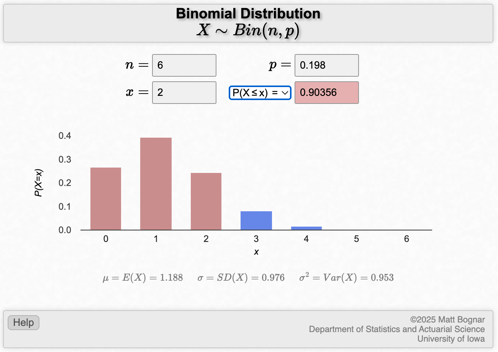
R notes
Producing a one-way frequency table
We have three categorical variables to summarise in Table 1: sex, stage and vital status. These variables are best summarised using one-way frequency tables, which can be constructed using the descriptives function from the jmv package, with the freq = TRUE option. Before constructing frequency tables however, we must define the variables as categorical variables, by converting them to factors.
Defining categorical variables as factors
To define a categorical variable as such in R, we define it as a factor using the factor function:
factor(variable=, levels=, labels=)
We specify:
- levels: the values the categorical variable can take
- labels: the labels corresponding to each of the levels (entered in the same order as the levels)
To define our variable sex as a factor, we use:
pbc <- readRDS("data/activities/mod01_pbc.rds")
pbc$sex <- factor(pbc$sex,
levels = c(1, 2),
labels = c("Male", "Female")
)We can then produce a frequency table:
descriptives(data = pbc, vars = sex, freq = TRUE)
DESCRIPTIVES
Descriptives
─────────────────────────────
sex
─────────────────────────────
N 418
Missing 0
Mean
Median
Standard deviation
Minimum
Maximum
─────────────────────────────
FREQUENCIES
Frequencies of sex
──────────────────────────────────────────────────
sex Counts % of Total Cumulative %
──────────────────────────────────────────────────
Male 44 10.52632 10.52632
Female 374 89.47368 100.00000
────────────────────────────────────────────────── Task: define
stageandstatus(Vital Status) as factors, and produce one-way frequency tables. Refer to the filepbc_info.txtto view the labels for each variable. For example, for Stage:
pbc$stage <- factor(pbc$stage,
levels = c(1, 2, 3, 4),
labels = c("Stage 1", "Stage 2", "Stage 3", "Stage 4")
)Producing a two-way frequency table
To produce tables summarising two categorical variables, we can use the contTables() function within the jmv package. The minimal inputs to include are data: the name of the data frame to be analysed, rows: the variable representing the rows of the table, and cols: the name of the columns of the table.
For example, to produce a two-way table showing stage of disease by sex using the pbc data frame, we use:
contTables(data = pbc, rows = sex, cols = stage)
CONTINGENCY TABLES
Contingency Tables
───────────────────────────────────────────────────────────────
sex Stage 1 Stage 2 Stage 3 Stage 4 Total
───────────────────────────────────────────────────────────────
Male 3 8 16 17 44
Female 18 84 139 127 368
Total 21 92 155 144 412
───────────────────────────────────────────────────────────────
χ² Tests
──────────────────────────────────────
Value df p
──────────────────────────────────────
χ² 0.8779873 3 0.8307365
N 412
────────────────────────────────────── [The bottom part of the output, χ² Tests, can be ignored for now]
You may notice in the above that the number of observations is now 412. This is because there are missing observations for either sex or stage: which is it, and how would you determine this?
From the cross-tabulation, you can see the individual frequencies of participants in each of the categories in each cell. For example, there are 3 male participants who have Stage 1 disease. You can also read the totals for each row and column. For example, there are 44 males, and 144 participants have Stage 4 disease.
You can also add percentages into your table using pcCol=TRUE to include column percents, and pcRow=TRUE for row percents. For example, to calculate the relative frequencies (i.e. percentages) of sex within each stage, we would request column percents with the option: pcCol=TRUE.
contTables(data = pbc, rows = sex, cols = stage, pcCol = TRUE)
CONTINGENCY TABLES
Contingency Tables
──────────────────────────────────────────────────────────────────────────────────────────────
sex Stage 1 Stage 2 Stage 3 Stage 4 Total
──────────────────────────────────────────────────────────────────────────────────────────────
Male Observed 3 8 16 17 44
% within column 14.28571 8.69565 10.32258 11.80556 10.67961
Female Observed 18 84 139 127 368
% within column 85.71429 91.30435 89.67742 88.19444 89.32039
Total Observed 21 92 155 144 412
% within column 100.00000 100.00000 100.00000 100.00000 100.00000
──────────────────────────────────────────────────────────────────────────────────────────────
χ² Tests
──────────────────────────────────────
Value df p
──────────────────────────────────────
χ² 0.8779873 3 0.8307365
N 412
────────────────────────────────────── We can see that the 3 male participants with Stage 1 disease represent 14% of those with Stage 1 disease.
2.18 Creating bar charts for one categorical variable
The simplest way to use the plot() function is by specifying an object to be plotted. To plot a single variable from a data frame, we must define it using: dataframe$variable.
Here we will create the bar chart shown in Figure 2.1 of the statistics notes using the mod01_pdc.rds dataset. The x-axis of this graph will be the stage of disease, and the y-axis will show the number of participants in each category.
plot(pbc$stage,
main = "Bar graph of stage of disease from PBC study",
ylab = "Number of participants"
)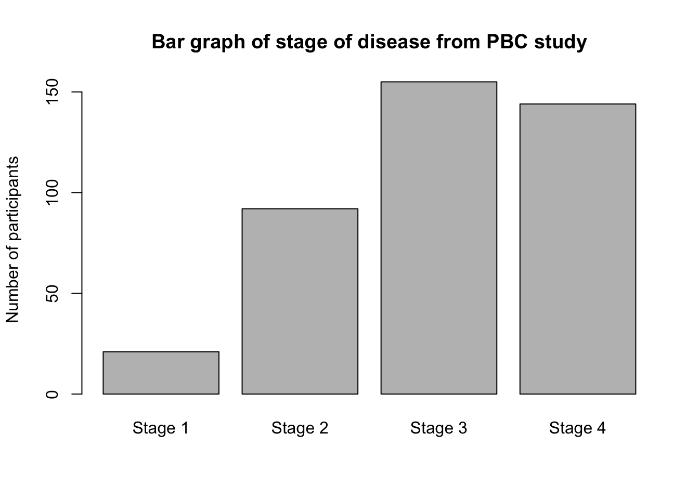
Note that stage is a categorical variable, that has been defined as a factor (in Section 2.17.1.1). You must define categorical data as factors to plot them in a bar graph.
2.19 Creating bar charts for two categorical variables
Creating a clustered bar chart as shown in Figure 2.4 can be done easily using the contTables function in the jmv package. First create a cross-tab from the variables to be plotted, for example, Stage by Sex:
contTables(data = pbc, rows = sex, cols = stage)
CONTINGENCY TABLES
Contingency Tables
───────────────────────────────────────────────────────────────
sex Stage 1 Stage 2 Stage 3 Stage 4 Total
───────────────────────────────────────────────────────────────
Male 3 8 16 17 44
Female 18 84 139 127 368
Total 21 92 155 144 412
───────────────────────────────────────────────────────────────
χ² Tests
──────────────────────────────────────
Value df p
──────────────────────────────────────
χ² 0.8779873 3 0.8307365
N 412
────────────────────────────────────── Creating a clustered bar chart as shown in Figure 2.4 can be done by requesting a bar chart (barplot=TRUE), and the x-axis should be constructed from stage - that is, the column variable:
contTables(pbc,
rows = sex, cols = stage,
barplot = TRUE, xaxis = "xcols"
)
CONTINGENCY TABLES
Contingency Tables
───────────────────────────────────────────────────────────────
sex Stage 1 Stage 2 Stage 3 Stage 4 Total
───────────────────────────────────────────────────────────────
Male 3 8 16 17 44
Female 18 84 139 127 368
Total 21 92 155 144 412
───────────────────────────────────────────────────────────────
χ² Tests
──────────────────────────────────────
Value df p
──────────────────────────────────────
χ² 0.8779873 3 0.8307365
N 412
────────────────────────────────────── 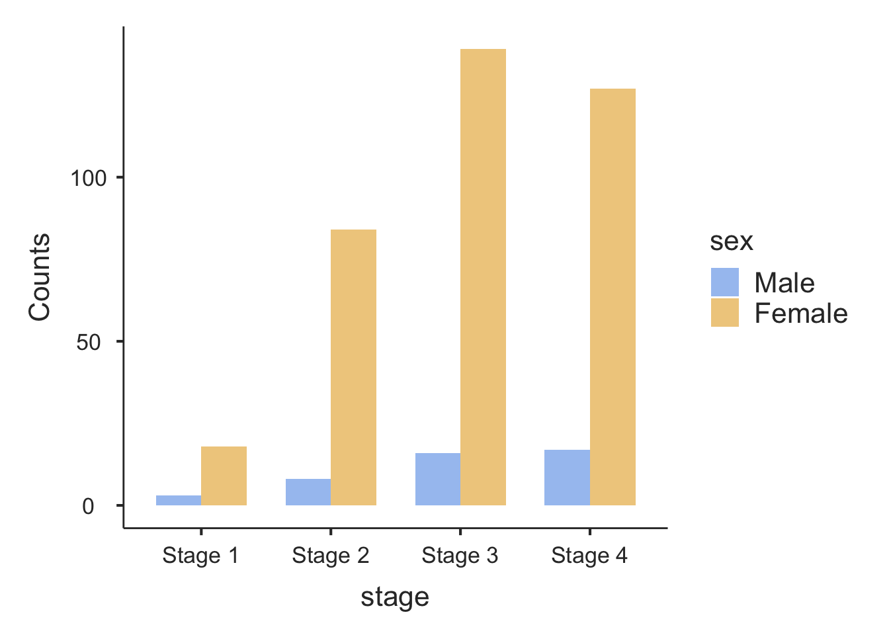
If you want the x-axis to be constructed from the row variable, you would use xaxis = "xrows".
To create a stacked bar chart (as in Figure 2.5), specify bartype to be stack:
contTables(pbc,
rows = sex, cols = stage,
barplot = TRUE, xaxis = "xcols", bartype = "stack"
)
CONTINGENCY TABLES
Contingency Tables
───────────────────────────────────────────────────────────────
sex Stage 1 Stage 2 Stage 3 Stage 4 Total
───────────────────────────────────────────────────────────────
Male 3 8 16 17 44
Female 18 84 139 127 368
Total 21 92 155 144 412
───────────────────────────────────────────────────────────────
χ² Tests
──────────────────────────────────────
Value df p
──────────────────────────────────────
χ² 0.8779873 3 0.8307365
N 412
────────────────────────────────────── 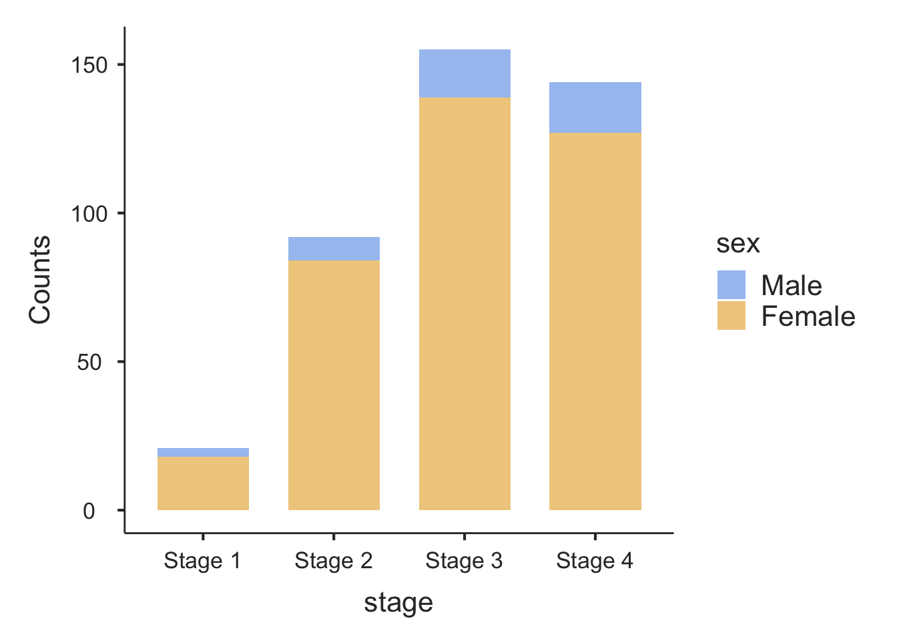
Finally, to create a stacked relative bar chart (as in Figure 2.6), specify the y-axis to be a percent (yaxis="ypc"), and the percentage be calculated from the columns of the frequency table (yaxisPc = "column_pc"):
contTables(pbc,
rows = sex, cols = stage,
barplot = TRUE, bartype = "stack", xaxis = "xcols",
yaxis = "ypc", yaxisPc = "column_pc"
)
CONTINGENCY TABLES
Contingency Tables
───────────────────────────────────────────────────────────────
sex Stage 1 Stage 2 Stage 3 Stage 4 Total
───────────────────────────────────────────────────────────────
Male 3 8 16 17 44
Female 18 84 139 127 368
Total 21 92 155 144 412
───────────────────────────────────────────────────────────────
χ² Tests
──────────────────────────────────────
Value df p
──────────────────────────────────────
χ² 0.8779873 3 0.8307365
N 412
────────────────────────────────────── 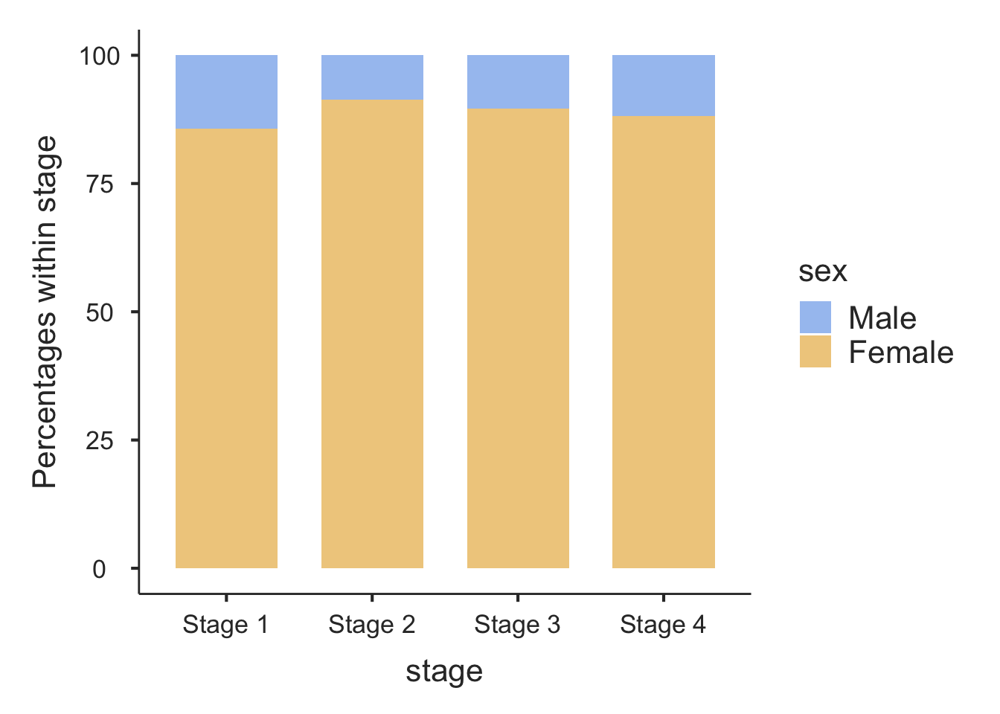
2.20 Importing data into R
We have described previously how to import data that have been saved as R .rds files. It is quite common to have data saved in other file types, such as Microsoft Excel, or plain text files. In this section, we will demonstrate how to import data from other packages into R.
There are two useful packages for importing data into R: haven (for data that have been saved by jamovi, SAS or SPSS) and readxl (for data saved by Microsoft Excel). Additionally, the labelled package is useful in working with data that have been labelled in jamovi.
Importing plain text data into R
A csv file, or a “comma separated variables” file is commonly used to store data. These files have a very simple structure: they are plain text files, where data are separated by commas. csv files have the advantage that, as they are plain text files, they can be opened by a large number of programs (such as Notepad in Windows, TextEdit in MacOS, Microsoft Excel - even Microsoft Word). While they can be opened by Microsoft Excel, they can be opened by many other programs: the csv file can be thought of as the lingua-franca of data.
In this demonstration, we will use data on the weight of 1000 people entered in a csv file called mod02_weight_1000.csv available on Moodle.
To confirm that the file is readable by any text editor, here are the first ten lines of the file, opened in Notepad on Microsoft Windows, and TextEdit on MacOS.

We can use the read.csv function:
sample <- read.csv("data/examples/mod02_weight_1000.csv")Here, the read.csv function has the default that the first row of the dataset contains the variable names. If your data do not have column names, you can use header=FALSE in the function.
Note: there is an alternative function read_csv which is part of the readr package (a component of the tidyverse). Some would argue that the read_csv function is more appropriate to use because of an issue known as strings.as.factors. The strings.as.factors default was removed in R Version 4.0.0, so it is less important which of the two functions you use to import a .csv file. More information about this issue can be found here and here.
2.21 Recoding data
One task that is common in statistical computing is to recode variables. For example, we might want to group some categories of a categorical variable, or to present a continuous variable in a categorical way.
In this example, we can use the pbc data and recode age into age groups:
- Less than 30
- 30 to less than 50
- 50 to less than 70
- 70 or older
The quickest way to recode a continuous variable into categories is to use the cut command which takes a continuous variable, and “cuts” it into groups based on the specified “cutpoints”
pbc$agegroup <- cut(pbc$age,
breaks = c(0, 30, 50, 70, 100)
)Notice that some numbers need to be defined for the lowest (age=0) and highest (age=100) bounds: both a lower and upper limit must be defined for each group.
If we examine the new agegroup variable:
summary(pbc$agegroup) (0,30] (30,50] (50,70] (70,100]
3 192 210 13 we see that each group has been labelled in the form of (a, b]. This notation is equivalent to: greater than a, and less than or equal to b. The cut function excludes the lower limit, but includes the upper limit. Our age groups have been defined to include the lower limit, and exclude the upper limit (for example, greater than or equal to 30 and less than 50).
We can specify this recoding using the right=FALSE option:
pbc$agegroup <- cut(pbc$age,
breaks = c(0, 30, 50, 70, 100),
right = FALSE
)
summary(pbc$agegroup) [0,30) [30,50) [50,70) [70,100)
3 192 210 13 Finally, we can specify labels for the groups using the labels option:
pbc$agegroup <- cut(pbc$age,
breaks = c(0, 30, 50, 70, 100),
right = FALSE,
labels = c(
"Less than 30", "30 to less than 50",
"50 to less than 70", "70 or more"
)
)
summary(pbc$agegroup) Less than 30 30 to less than 50 50 to less than 70 70 or more
3 192 210 13 2.22 Computing binomial probabilities using R
There are two R functions that we can use to calculate probabilities based on the binomial distribution: dbinom and pbinom:
dbinom(x, size, prob)gives the probability of obtainingxsuccesses fromsizetrials when the probability of a success on one trial isprob;pbinom(q, size, prob)gives the probability of obtainingqor fewer successes fromsizetrials when the probability of a success on one trial isprob;pbinom(q, size, prob, lower.tail=FALSE)gives the probability of obtaining more thanqsuccesses fromsizetrials when the probability of a success on one trial isprob.
To do the computation for part (a) in Worked Example 2.1, we will use the dbinom function with:
- x is the number of successes, here, the number of smokers (i.e. k=3);
- size is the number of trials (i.e. n=6);
- and prob is probability of drawing a smoker from the population, which is 19.8% (i.e. p=0.198).
Replace each of these with the appropriate number into the formula:
dbinom(x = 3, size = 6, prob = 0.198)[1] 0.08008454To calculate the upper tail of probability in part (b), we use the pbinom(lower.tail=FALSE) function. Note that the pbinom(lower.tail=FALSE) function does not include q, so to obtain 4 or more successes, we need to enter q=3:
pbinom(q = 3, size = 6, prob = 0.198, lower.tail = FALSE)[1] 0.01635325For the lower tail for part (c), we use the pbinom function:
pbinom(q = 2, size = 6, prob = 0.198)[1] 0.9035622Activities
Activity 2.1
Researchers at a maternity hospital in the 1970s conducted a study of low birth weight babies. Low birth weight is classified as a weight of 2500g or less at birth. Data were collected on age and smoking status of mothers and the birth weight of their babies. The file Activity_2.1.rds contain data on the participants in the study. The file is located on Moodle in the Learning Activities section.
Create a 2 by 2 table to show the proportions of low birth weight babies born to mothers who smoked during pregnancy and those that did not smoke during pregnancy. Answer the following questions:
- What was the total number of mothers who smoked during pregnancy?
- What proportion of mothers who smoked gave birth to low birth weight babies? What proportion of non-smoking mothers gave birth to low birth weight babies?
- Construct a stacked bar chart of the data to examine if there a difference in the proportion of babies born with a low birth weight in relation to the age group of the mother? Provide appropriate labels for the axes and give the graph an appropriate title. [Hint: plot the data using the
AgeGrpvariable] - Using your answers to the question a) and b), write a brief conclusion about the relationship of low birth weight and mother’s age and smoking status.
Activity 2.2
In a Randomised Controlled Trial, the preference of a new drug was tested against an established drug by giving both drugs to each of 90 people. Assume that the two drugs are equally preferred, that is, the probability that a patient prefers either of the drugs is equal (50%). Use either the web applet, or one of the binomial functions in R to compute the probability that 60 or more patients would prefer the new drug. In completing this question, determine:
- The number of trials (
nfor the web applet,sizefor R) - The number of successes we are interested in (
xfor web applet,xorqfor R) - The probability of success for each trial (
pfor the web applet,probfor R) - The form of the binomial function
- for the web applet:
P(X=x),P(X≤x)orP(X≥x); - for R:
dbinom,pbinomorpbinom(lower.tail=FALSE)
- for the web applet:
- The final probability.
Activity 2.3
A case of Schistosomiasis is identified by the detection of schistosome ova in a faecal sample. In patients with a low level of infection, a field technique of faecal examination has a probability of 0.35 of detecting ova in any one faecal sample. If five samples are routinely examined for each patient, use the web applet or R to compute the probability that a patient with a low level of infection:
- Will not be identified?
- Will be identified in two of the samples?
- Will be identified in all the samples?
- Will be identified in at most 3 of the samples?
Activity 2.4
A health survey was conducted, and an extract of data has been provided in Activity_2.4-health-survey.csv. Categorise height into 20cm intervals, and present the height-groups appropriately.
Activity 2.5
The data in the file Activity_2.5-LengthOfStay.rds (available on Moodle) has information about birth weight and length of stay collected from 117 babies admitted consecutively to a hospital for surgery. For each variable:
Create a histogram, density plot and boxplot to inspect the distribution of birth weight and length of stay;
Complete the following summary statistics for each variable:
- mean and median;
- standard deviation and interquartile range.
Make a decision about whether each variable is symmetric or not, and which measure of central tendency and variability should be reported.
Activity 2.6
If weights of men are Normally distributed with a population mean \(\mu\) = 87, and a population standard deviation, \(\sigma\) = 8 kg:
- What is the probability that a man will weigh 95 kg or more? Draw a Normal curve of the area represented by this probability in the population (i.e. with \(\mu\) = 87 kg and \(\sigma\) = 8 kg).
- What is the probability that a man will weigh more than 75 kg but less than 95 kg? Draw the area represented by this probability on a Normal curve.